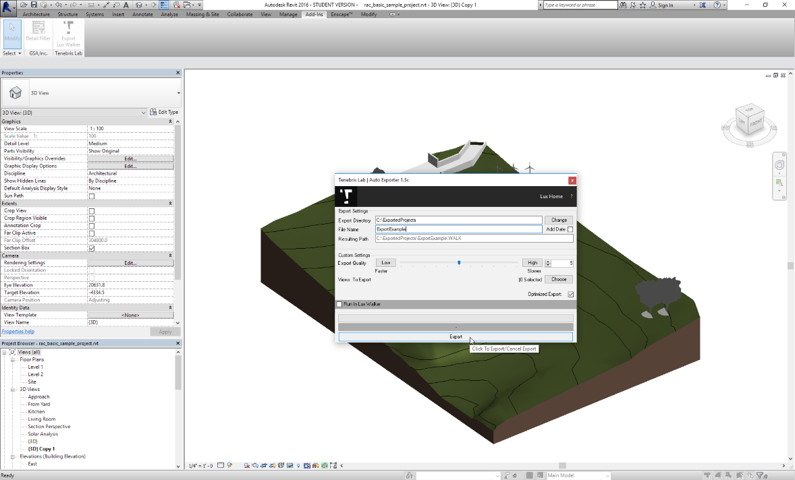

Content Preparation:¶
Location and Model Info.¶
Lux Walker imports your location information from your Revit file. This allows for correct lighting and seasonal conditions for your project.
To do this you need to correctly set up your projects location and project north within your Revit project.
Steps: In Revit Click: Manage tab>Project Location panel> Location. In the Location Weather and Site dialog, click the Location tab. Specify the project location using one of these methods: • Default City List: • Nearest major city. For City, select a city from the list. The corresponding Latitude, Longitude, and Time Zone values are displayed.
Exact location. Enter values for Latitude and Longitude. Internet Mapping Service: For Project Address, enter the street address, city and state, or latitude and longitude of the project, and click Search.
Please ensure your True North is correctly set up so that sun angles are correct in LUX Walker.
Optimize your model.¶
When exporting to VR keep in mind that it needs to run as fast as possible so that the user does not experience motion sickness. Too many digital lines and geometries will slow down the project.
There are many ways to increase performance and optimize your models: Hide elements and categories not required for discussion. Limit your view distance. Remove Complex Geometry and Unnecessary Detail. Create a section box around what you would like to showcase. Have a less detailed master plan Section box areas or parts of the project with more detail. Use objects and Vegetation from the LUX Walker Library.
Unnecessary Elements and Categories:¶
Each category in Revit is exported as a Layer to LUX Walker. Please disable categories and elements you do not need to see in VR.
Usually: Massing, Entourage, Planting
View Distance: Rendering distance has a massive impact on performance in LUX Walker. The panorama tool allows you to load in a panorama which you can use to create realistic context for your buildings. If you absolutely need to load in a large 3D site model, make sure you section box so your building is as close to the centre as possible. If you do not do this you might have problems finding your project when LUX Walker has loaded.
Complex Geometry and Detail: When in doubt or the project runs slowly switch to wireframe view in Revit and inspect the file for complex objects. Anything that appears solid from a distance in wireframe mode can cause issues and slow downs. Use items from LUX Walker library where possible.
Section Box and Model Variations:¶
When dealing with large projects with may units/structures/spaces to show. Make different exports. Export a masterplan .WALK file without any furniture or details. Please make sure these elements are also off in your Linked Revit Files. Create detail section box models of rooms or parts of the building. You can enable and disable linked files in your layer tool in LUX Walker. By linking in two different variations of a project you can switch between them using the layer panel.
Items and Vegetation:¶
Using LUX Walker detail items and vegetation will increase performance and make the experience faster and more realistic. CAD imports and Complex Items in Revit are problematic. Items like: Pillows, 3D Fire and smooth furniture items will cause slowdowns. LUX Walker’s library includes pillows, bottles, glasses, books, cars, plates and vases and many more. These items have been added to the library to reduce the impact on performance and give the user a better experience in VR.
Material Transfer:¶
LUX Walker will automatically convert your Revit materials to something more realistic. However, keep in mind that all your settings will transfer including tint and fade settings. This means if you fade a material so it looks better in a Revit view it will come in as transparent in LUX Walker.
Special Materials:¶
Materials with the following text anywhere in their names will import as special materials and ignore material settings and textures assigned in Revit. “mat_light”: Imports as a glowing material. Useful for lights. “mat_ivy”: Imports as Ivy with cut out and shadows. “mat_unlit”: Imports as a material that is not affected by lighting. Useful for TV’s. Keeps Revit assigned texture. “grass” or “earth”: Imports as default LUX Walker grass material. “water”: Imports default LUX Walker water material. “mirror”: Imports as default mirror material.
FAQ¶
XXXXXX
Exporting Process:¶
Open a project in Revit that you wish to export for VR Walkthrough.
Open The Default 3D View OR Choose an existing 3D View
Select the Add-Ins tab inside of Revit.

Revit to VR 1
Click the Export Lux Walker button on the Tenebris Lab section.

Revit to VR 2
Click Change to change the location of the export.

Revit to VR 3
Type in the File Name for your project, then click Export to start the export process.
Revit to VR 4
Open the .WALK file in LUX Walker by double clicking or selecting in LUX Walker.
Revit to VR 5
Enjoy your WALK
Export Window Settings:¶
Add Date: Appends a date to your filename for easy versioning. Export Quality: This limits the amount of geometry exported to LUX Walker. A value of 6 is generally good enough for VR. Higher values will mean LUX Walker will be slower.
Views to Export: This allows you to choose camera views to export to LUX Walker for quicker navigation in the Render tool.
Optimized Export: Optimizes your file. Might increase loading time, but greatly improves comfort in LUX Walker.
Run in LUX Walker: If LUX Walker is installed on your PC this will open the file after exporting.
Versioning:¶
Export a new file or use the “Add Date” export option to create versions of a project. Please note: You cannot use multi user walk through mode with different versions of a project.
Design Options:¶
Create a new Master File. Link in Option 1 and Option 2. In LUX Walker use the layer tool to disable and enable design options.
Optimize:¶
LUX Walker can optimize your export by lowering the value in the Export Quality slider. This reduces geometry count which in turn speeds up LUX Walker. It has some side effects such as reducing the edges of round objects making them appear more geometric in shape. If you absolutely need to see something at the highest detail, export a “section box” of only the items/room in question and increase the slider to the maximum value.
For Large projects we recommend exporting the whole project at 5 or below, then exporting section boxes of areas within the project at a higher quality.
This adds the benefit of limiting discussion around a specific part of a project and not getting lost in undeveloped areas.
Common Issues:¶
LUX Walker is slow: Reduce geometry quality using the quality slider: Remove unused details and objects from the export view.
Materials are not correct in LUX Walker: Ensure the material settings are correct in Revit. Materials with fade and tint will export these settings to LUX Walker. See C1-M1-U03 for more info.